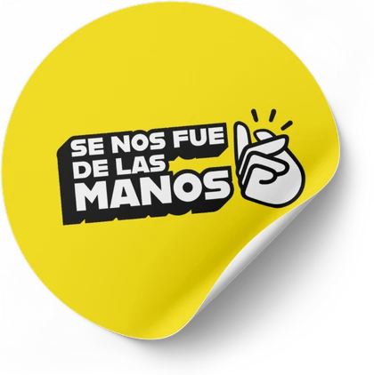
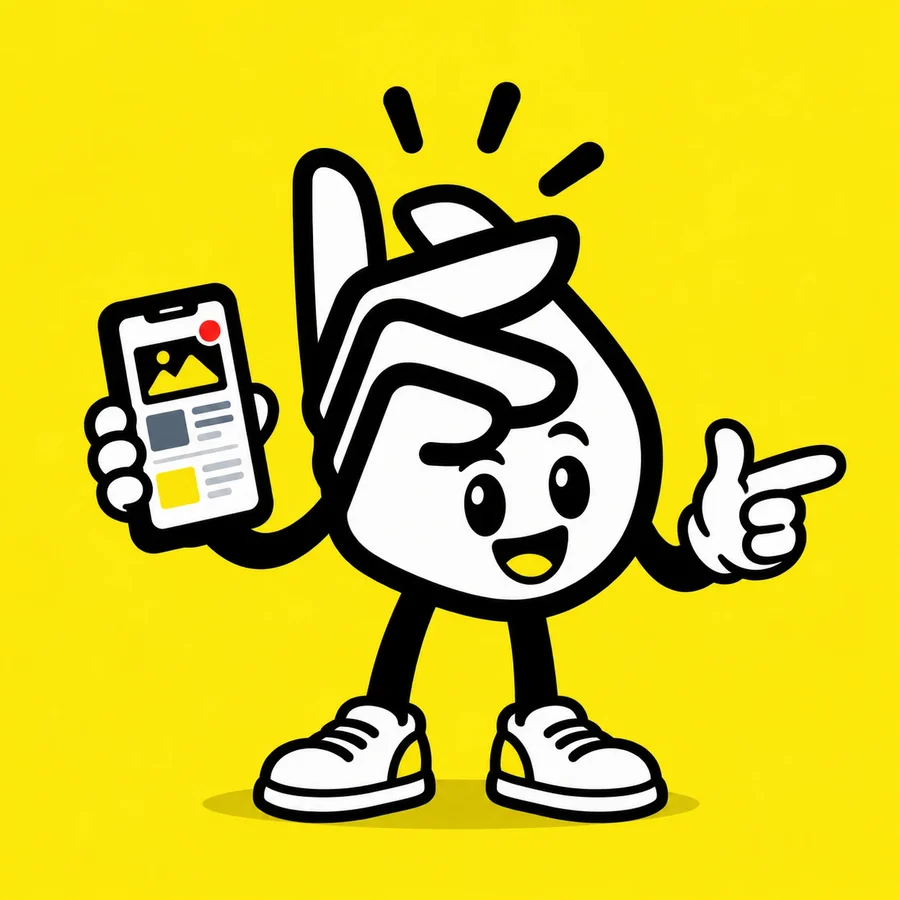
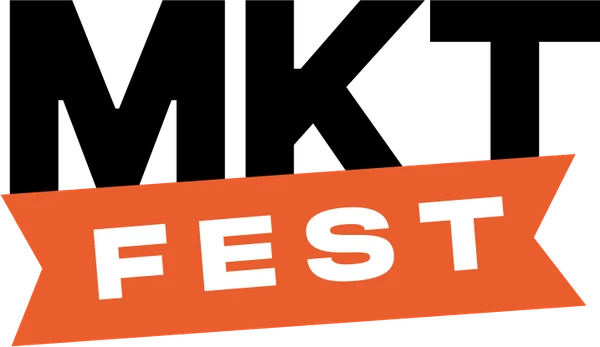

#00
Se nos fuede las manos
Somos docentes, ayudantes y estudiantes de la UBA que enseñamos marketing desde otro lado: fuera del aula, en la cocina de cada marca.
- 15capítulos del podcast
- +60speakers en dos ediciones del Marketing Fest
- +1200personas en la 1ra
- +2600personas en la 2da


Manu · vocero con IASoy el vocero con IA de Se Nos Fue de las Manos. Te muestro todo: el podcast, el Marketing Fest y lo que podemos hacer con tu marca.
Salimos del aula
En Se Nos Fue de las Manos somos docentes, ayudantes y estudiantes de la UBA con ganas de enseñar desde otro lado. Salimos del aula para ver la verdad de cada empresa: lo que pasa detrás, la cocina del marketing.
Por eso hacemos el podcast, donde charlamos con gerentes de marketing de marcas referentes, y el Marketing Fest, un evento abierto a todo el mundo para democratizar el conocimiento: que no tengas que pagar una fortuna para ver a los capos del rubro contar lo que hacen bien y entender cómo hacer crecer tu negocio o tu carrera.
Qué hacemos
ManuElegí por dónde arrancar. Si sos una marca, mirá nuestros servicios.
El podcast
15 capítulos con los que están detrás de McDonald's, CCU, Pepsico, Logitech y más.

Marketing Fest
El evento de marketing más grande de la FCE UBA. En la 2da edición vinieron más de 2600 personas.
Nuestros servicios
Contenido en la calle, videos y UGC, eventos y sponsoreo del podcast.
Sumate
¿Hacés UGC, filmás o editás? Anotate y te llamamos cuando necesitemos una mano.
Para arrancar el podcast
ManuSi tenés 40 minutos, mirá estos dos. Los de Con el Kora también pasaron por el Marketing Fest.
 Jugar a construir una comunidad románticaMalena Riesgo y Facundo Mey#11
Jugar a construir una comunidad románticaMalena Riesgo y Facundo Mey#11Jugar a construir una comunidad romántica
Malena Riesgo y Facundo Mey · Fundadores de Con el Kora
Ver el capítulo ¿Cuál es el verdadero secreto detrás de las RRPP de McDonald’s?Fernando Arango#12
¿Cuál es el verdadero secreto detrás de las RRPP de McDonald’s?Fernando Arango#12¿Cuál es el verdadero secreto detrás de las RRPP de McDonald’s?
Fernando Arango · Responsable de comunicaciones de McDonald’s (Arcos Dorados)
Ver el capítuloMarketing Fest · 3ra edición
Avisame cuando salga la 3ra
Dejanos tus datos y te escribimos apenas abra la inscripción. Es libre y gratuita, pero los cupos vuelan.
¿Tenés una marca? Hablemos.
Contenido en la calle, videos y UGC, eventos o tu marca en el podcast o en el próximo Marketing Fest. Contanos qué tenés en mente.